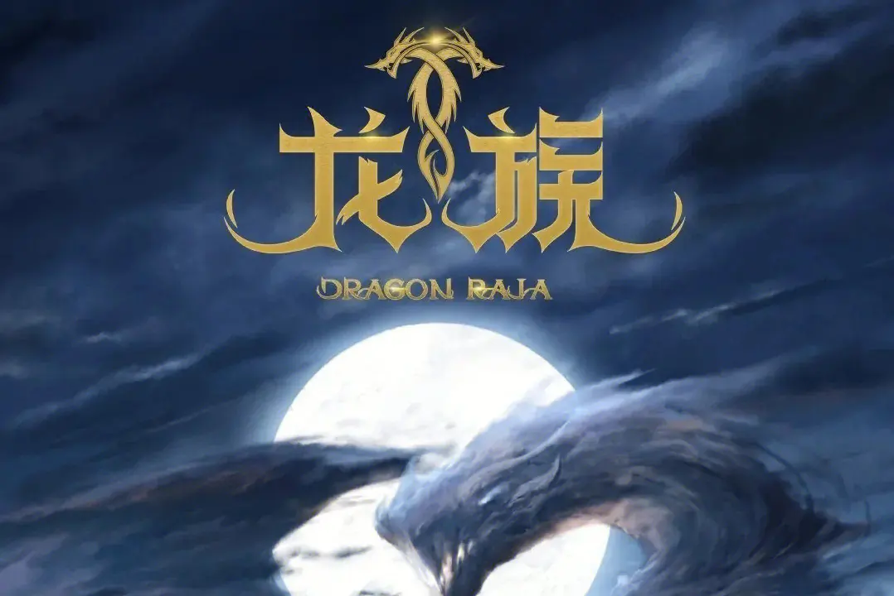

由小城市走向大洋彼岸，平凡普通的生活突然变得精彩传奇，蔫小孩受到腰细腿长的御姐召唤，变成了日益成长的屠龙勇士。这个，就是《龙族》。而这个蔫主角路明非，其实就是江南内心所向往的生活。
——沧月，中国青春作家，江南资深契妹，代表作《镜》系列、《羽》系列、《七夜雪》等。 [3]
青春小说，从人物到故事，从构思到情感，从文字到感觉，都有着不小的变化。而像《龙族》这种集热血感、青春感、动漫风于一体的小说，算是一个创新。而《龙族》也是江南最具创新突破感的作品。
——明晓溪，中国青春作家，代表作《烈火如歌》、《泡沫之夏》、《心之萌》等。 [3]
《龙族》讲的，其实是一个关于“抗争”的主题，在那个世界里，精英分子在抗争，蔫小孩也在抗争；他们抗争压迫，抗争命运。但是最终却需要回到“热血成长”的主题，因为只有正义的抗争与热血的成长，才是让年轻人或兴奋或思考的理由。请让我们一起热血！
——蔡骏，中国悬疑作家，代表作《天机》、《人间》、《地狱的第十九层》等。 [3]
相比较《龙族Ⅰ》，《龙族Ⅱ》在故事技巧上更为成熟。一部青春幻想热血向的小说，却有着非常快的故事节奏与情节密度。快速切换的镜头，细腻华美的语言，独具匠心的细节，让这部小说拥有极为浓厚的阅读快感。从2010年成都书市出第一部开始，我追看了一年，我喜欢这本书。
——南派三叔，中国悬疑小说家，代表作《盗墓笔记》等。 [5]
《龙族Ⅱ》是一部在人物塑造上非常成功的小说。这些男孩与女孩在这部小说里慢慢地成长，学会了坚强、执著与爱。衰衰的路明非、孤独的楚子航、酷酷的恺撒，当然还有那些漂亮可爱的姑娘们——诺诺、夏弥、苏茜、陈雯雯、酒德麻衣……我和江南是邻居，我们经常在小区里散步讨论这些人物和命运。我也喜欢这本书。
——唐家三少，中国网络文学作家，代表作《斗罗大陆》、《狂神》等。 [5]
我曾和江南一起聊过中国幻想文学的话题，从他的《九州缥缈录》系列到《上海堡垒》，从《刺客王朝》到《龙族》，他用不同的风格演绎出了幻想文学殿堂里的雄奇瑰丽，而《龙族》毫无疑问是其中最具有特色的。我们希望它能成为中国的《哈利·波特》，走向世界。
——张强，著名影视制作人，中影集团副总 [8]
青春小说《龙族》中不仅有精彩的冒险故事，还讲述了几个少年的成长。从初出茅庐到逐步走向新的世界，在他们身上展现了正义与勇气、友情与执著、热血与梦想。
《龙族》系列的人物设定带有很明显的日本动漫和轻小说的痕迹：被打上“废柴”标签的男主角路明非，活泼犀利的女主陈墨瞳，霸气桀骜的贵族子弟恺撒，严峻冷酷的师兄楚子航。这些主要人物在《龙族Ⅰ：火之晨曦》中以非常鲜明而又富有既视感的形象出现。熟悉动漫亚文化的目标读者群可以很快从中寻找到自己喜爱和熟悉的人物类型，并且将自己以往阅读体验中积累的情感迅速投射到对《龙族》的阅读中。然而这也带来一个问题：如果作者没有自己的杀手锏，那么作品容易流于程式，人物趋向于脸谱化，读者也会很快丧失兴趣。 [18]